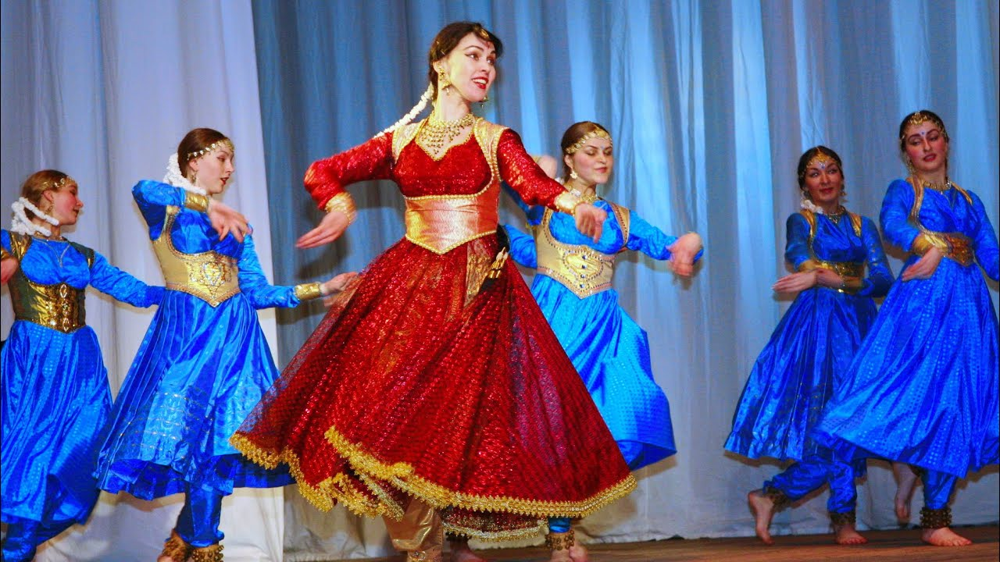

Kathak is one of the main genres of ancient Indian classical dance and is traditionally regarded to have originated from the travelling bards of North India referred as Kathakars or storytellers. These Kathakars wandered around and communicated legendary stories via music, dance and songs quite like the early Greek theatre. The genre developed during the Bhakti movement, the trend of theistic devotion which evolved in medieval Hinduism.Modern Kathak masters of the Lucknow tradition can still trace their lineage back to the court of Wajid Ali Shah, including the world renowned Pandit Birju Maharaj. KDT is honored to consider Pandit Birju Maharaj, the living legend of Kathak dance, an honorary member of its Board of Directors.Kathak is found in three distinct forms, called "gharanas", named after the cities where the Kathak dance tradition evolved – Jaipur, Banaras and Lucknow.[5] While the Jaipur gharana focuses more on the foot movements, the Banaras and Lucknow gharanas focus more on facial expressions and graceful hand movements. Stylistically, the Kathak dance form emphasizes rhythmic foot movements, adorned with small bells (Ghungroo), and the movement harmonized to the music.[4][6] The legs and torso are generally straight, and the story is told through a developed vocabulary based on the gestures of arms and upper body movement, facial expressions, stage movements, bends and turns. The main focus of the dance becomes the eyes and the foot movements.